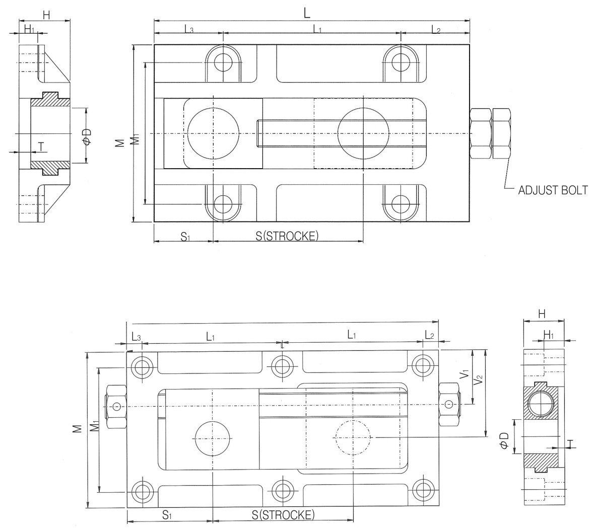

Take-up Units
베어링 없이 샤프트만 직접 고정하는 테이크업으로, 체인 컨베이어에 주로 쓰이며 자동창고 컨베이어·자동화 기계·산업기계 제작 등에도 응용됩니다. CTSN은 CTSM과 동일 개념이나 축 중심이 한쪽으로 치우쳐(오프셋) 있어 벽면 설치나 축 중심 위치 변경이 필요할 때 사용합니다.
당사 정식 규격 도면 (위: CTSM 정중심형 · 아래: CTSN 오프셋형)

L=전장 · L1·L2·L3=길이 구간 · M·M1=폭 · V1·V2=오프셋 치수(CTSN만 해당) · S1=조정볼트 위치 · S(STROKE)=조정거리 · H·H1=높이 · φD=축경 · T=두께
| 형번 | L | L1 | L2 | W | W1 | H | H1 | D(축경) | T±0.5 | S1 | STROKE | 조정볼트 | 고정볼트 |
|---|---|---|---|---|---|---|---|---|---|---|---|---|---|
| CTSM-1 | 170 | 150 | 10 | 60 | 40 | 26 | 17 | 15 | 6 | 40 | 80 | M14 | 4-M8 |
| CTSM-3 | 250 | 115 | 10 | 102 | 82 | 26 | 17 | 20 | 4.5 | 35 | 135 | M14 | 6-M8 |
| CTSM-4 | 250 | 115 | 10 | 102 | 82 | 26 | 17 | 25 | 2.5 | 35 | 135 | M14 | 6-M8 |
단위: mm
| 형번 | L | L1 | L2 | W | W1 | H | H1 | D(축경) | T±0.5 | V1 | V2 | S1 | S(스트로크) | 조정볼트 | 고정볼트 |
|---|---|---|---|---|---|---|---|---|---|---|---|---|---|---|---|
| CTSN-7 | 200 | 90 | 10 | 100 | 80 | 26 | 17 | 22 | 4 | 35 | 56 | 55 | 90 | M16 | 6-M8 |
| CTSN-9 | 300 | 140 | 10 | 114 | 90 | 28 | 17 | 32 | 4 | 37 | 64 | 60 | 180 | M18 | 6-M10 |
단위: mm · 안내 카드에 있던 “CTEM-1”은 당사 카탈로그에서 확인되지 않아, 동일 위치의 정식 형번인 “CTSM-1”로 정정해 실었습니다.
※ 위 표는 당사 정식 규격표(테이크업 유닛 챕터)를 기준으로 작성했습니다. 정밀 가공·발주 전에는 반드시 당사 정식 규격표 원본 또는 견적 문의로 최종 확인하시기 바랍니다.